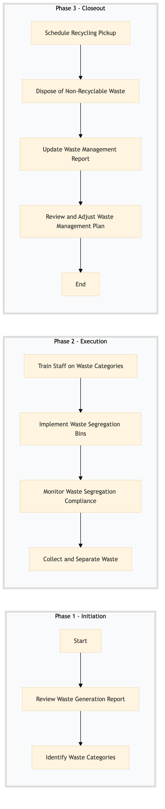

| Role | Steps |
|---|---|
| Executive Housekeeper | 1.1 1.2 3.1 3.2 3.3 3.4 |
| Housekeeping Supervisor | 2.1 2.2 2.3 2.4 |
| Step | Name | Role | System | Input | Output | KPI | Dec? | Exc? | Pain Point / Risk |
|---|---|---|---|---|---|---|---|---|---|
| 1.1 | Review Waste Generation Report | Executive Housekeeper | Oracle OPERA Cloud | Waste generation report from Oracle OPERA Cloud | Action plan for waste reduction and recycling | Less than 30 minutes to review the report | Y | N | Inconsistent data reporting in Oracle OPERA Cloud |
| 1.2 | Identify Waste Categories | Executive Housekeeper | Oracle OPERA Cloud | Action plan for waste reduction and recycling | Waste category identification document | Less than 1 hour to identify categories | N | Y | Complexity in categorizing mixed waste streams |
| 2.1 | Train Staff on Waste Categories | Housekeeping Supervisor | Oracle OPERA Cloud | Waste category identification document | Training session notes | Less than 2 hours for training sessions | N | Y | Low staff engagement in recycling programs |
| 2.2 | Implement Waste Segregation Bins | Housekeeping Supervisor | Oracle OPERA Cloud | Waste category identification document | Installation checklist for waste bins | Less than 1 day to install bins | N | Y | Limited space in public areas for additional bins |
| 2.3 | Monitor Waste Segregation Compliance | Housekeeping Supervisor | Oracle OPERA Cloud | Waste segregation compliance checklist | Compliance report | Daily monitoring with less than 15 minutes per check | Y | N | High volume of waste leading to non-compliance |
| 2.4 | Collect and Separate Waste | Housekeeping Staff | Oracle OPERA Cloud | Waste segregation compliance report | Sorted waste bags for recycling or disposal | Less than 1 hour to collect and sort waste | N | Y | Inadequate storage space for sorted waste |
| 3.1 | Schedule Recycling Pickup | Executive Housekeeper | Oracle OPERA Cloud | Sorted waste bags | Pickup confirmation from recycling service provider | Less than 24 hours to schedule pickup | N | Y | Inconsistent pickup schedules |
| 3.2 | Dispose of Non-Recyclable Waste | Executive Housekeeper | Oracle OPERA Cloud | Non-recyclable waste bags | Disposal confirmation from waste management service provider | Less than 24 hours to dispose of waste | N | Y | High disposal costs |
| 3.3 | Update Waste Management Report | Executive Housekeeper | Oracle OPERA Cloud | Pickup and disposal confirmations | Updated waste management report | Less than 1 hour to update the report | N | Y | Data entry errors in Oracle OPERA Cloud |
| 3.4 | Review and Adjust Waste Management Plan | Executive Housekeeper | Oracle OPERA Cloud | Updated waste management report | Adjusted waste management plan | Less than 1 day to review and adjust the plan | Y | N | Inadequate data for informed decision-making |
This process outlines the waste management and recycling procedures at a full-service Marriott hotel, ensuring compliance with environmental standards and operational efficiency.